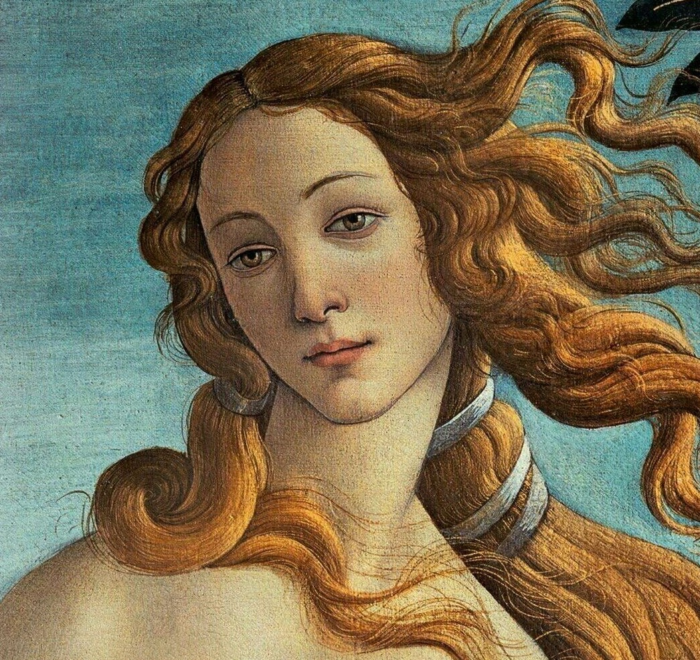
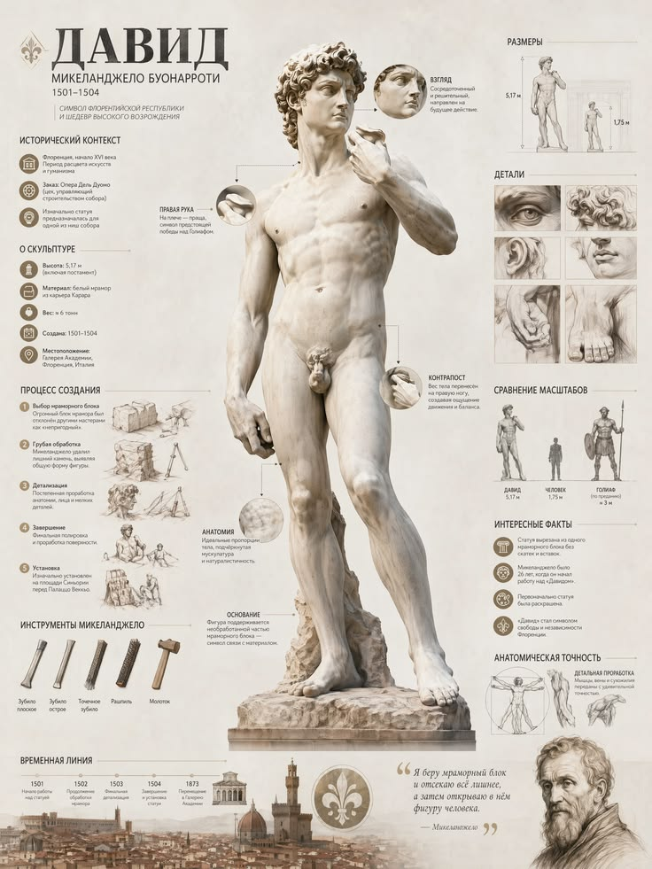
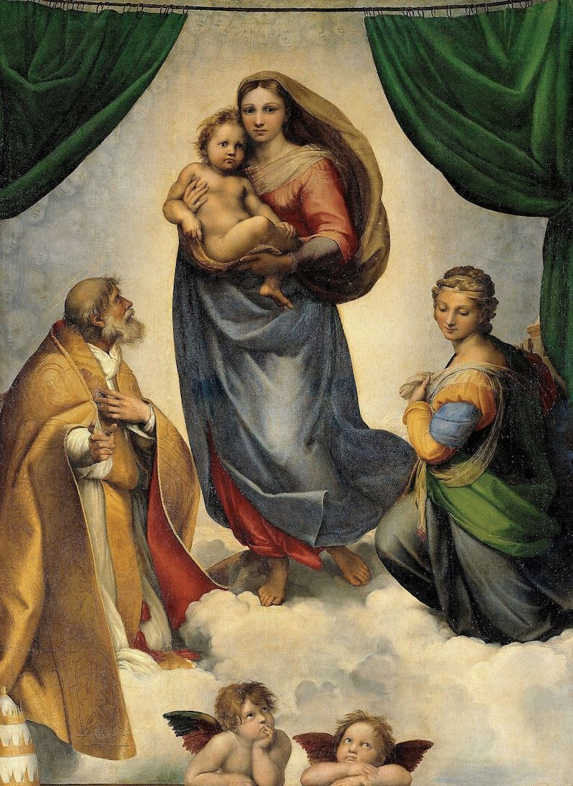

Леонардо да Винчи Микеланджело Рафаэль
Художник, учёный, изобретатель и инженер — образец «универсального человека» эпохи Возрождения.
Нажать для большого изображения
Скульптор, живописец и архитектор. Расписал потолок Сикстинской капеллы в Ватикане и создал статую Давида.

«Давид» (1501–1504), Флоренция.
Мастер гармоничных композиций и мягких образов. Самая известная фреска — «Афинская школа», где собраны великие философы античности.

«Сикстинская мадонна» (1512–1513), Дрезден.